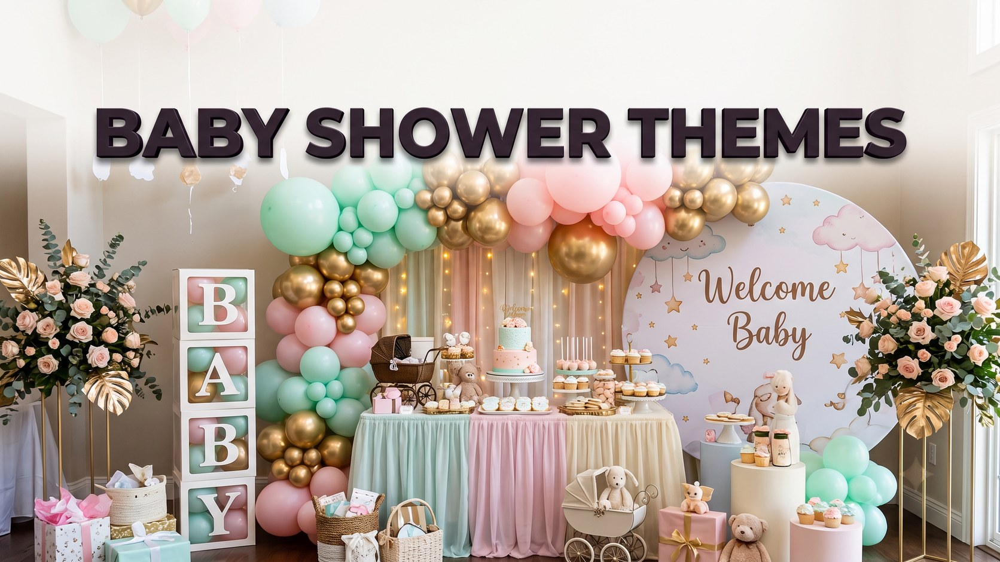

Baby Shower Themes & Decoration Ideas
Published October 10, 2026 · Updated October 10, 2026 · By EventBuzz Team

A baby shower theme does not need to be grand to be gorgeous. It gives every small decision, balloons, cake colour, napkins, a direction, so the room looks planned instead of patched together. Whether the family is welcoming a boy, a girl, or keeping a sweet surprise, this guide covers themes that work in homes and small halls, colour schemes that photograph beautifully, balloon and table decor, a photo corner, and kind budget tips. Choose one idea, repeat its colours in three places, and the party will feel made with love.
Theme Ideas for a Baby Boy
Classic boy themes stay popular because they are easy to decorate and photograph. Little gentleman pairs soft blue with white and silver, using bow tie shapes and striped bunting. Adventure themes use sky blue, clouds and paper hot air balloons. Woodland themes with sage, cream and little fox or bear faces feel modern and calm, and blend with wooden furniture and plants. Sports themes work for true fans if you keep team colours pastel and gentle. Add the baby’s name in wooden letters on the main table for a personal finish.
Theme Ideas for a Baby Girl
Girl themes shine in soft layers and floral details. Blush and gold is timeless: pink balloons in two shades, gold accents, roses in jars, and a white cake with a simple topper. Garden tea party themes invite floral cloths, teacups and bite size sandwiches. Butterfly and rainbow themes bring gentle colour without a fully pink room, and twinkle star themes in blush, cream and gold suit evening showers with fairy lights. Repeat one element, a flower, star or colour, on the invitation, banner and cake to tie the look together.
Gender Neutral Theme Ideas
When the gender is a surprise, neutral themes are some of the most beautiful of all. Honey bee themes in yellow, white and soft gold are cheerful and easy. Sunshine and lemon themes feel fresh for daytime, with real lemons in glass bowls as free decor. Boho rainbow themes in rust, mustard, cream and terracotta look warm and modern at home. Storybook themes welcome framed covers and soft toys from family shelves, and safari themes in sage, sand and cream are gentle yet playful for older siblings.
Colour Schemes That Always Work
Strong colour choices rescue even simple decor. The safest formula is two main colours plus white or cream: sage and cream is calm, powder blue and white is classic, blush, cream and gold is celebratory, yellow and white is pure sunshine, and terracotta, mustard and cream gives a modern boho glow. Buy balloons, napkins and ribbon in exactly these shades, and borrow white serving dishes from family kitchens. Mixed white plates look intentional; mismatched colours look accidental. Test your colours together in daylight before buying in bulk.
Balloon and Table Decor, Step by Step
Balloons create the party feeling fastest. A simple garland needs balloons in three sizes, inflated on the morning so they stay glossy, fixed along a string from the cake table upward like rising bubbles. Two bunches flanking the mom to be’s chair make every photo look styled. For the table, lay a cloth or runner in your main colour, then build height with a cake stand, tiered tray or stacked books under a cloth. Scatter small flowers, napkins in the second colour, and printed food labels. The gift table needs only a banner and a basket for cards.
Photo Corner Setup
Every shower deserves one beautiful photo spot, because these pictures become family treasures. Choose the wall with the best natural light, facing a window. Hang a plain curtain or balloon garland as backdrop, add the baby’s name in letters, a nice chair for the mom to be, and a basket of props: a tiny crown, baby shoes and letter boards. Test the spot with your phone before guests arrive and check for shadows. Invite groups over between games and food, and ask one confident guest to be unofficial photographer so the mom to be appears in every picture.
Budget Tips That Still Look Lovely
Beautiful does not have to mean expensive. Borrow white dishes, jars, cake stands and soft toys from family cupboards. Print banners, labels and signs at home; simple designs in matching colours look crisp. Spend on one hero item, like a balloon garland or cake topper, and keep the rest simple. Use real items as decor: lemons, baby clothes on a small line, and children’s books cost nothing and charm everyone. Warm light, tidy surfaces and happy people photograph better than any expensive prop.
Frequently Asked Questions
When should a baby shower be held?
Most showers happen in the seventh or eighth month of pregnancy, when the mom to be is still comfortable and the celebration can build happy anticipation. Always check with her and her family first.
How many colours should a baby shower theme use?
Two main colours plus one neutral such as white or cream is the sweet spot. It looks designed and peaceful in photos, and it keeps shopping simple and affordable.
Can I decorate a baby shower at home on a small budget?
Absolutely. Borrow white serving pieces, print paper decor at home, focus spending on balloons and the cake, and use fruit, flowers and baby items you already own as decorations.
What is the easiest theme for a surprise gender shower?
Honey bee, sunshine lemon and sage woodland themes are all joyful without blue or pink. They also match almost any home, which makes decorating faster.
How early should decorations be set up?
Set tables, backdrops and the photo corner the evening before if possible. Inflate balloons on the morning of the party so they look fresh and glossy in photographs.
Conclusion
The most beautiful baby shower is the one that feels like the family it celebrates. Pick a theme with love, keep colours calm and consistent, create one lovely photo corner, and spend your energy on welcoming people warmly.
Happy decorating, may your shower be truly sweet.